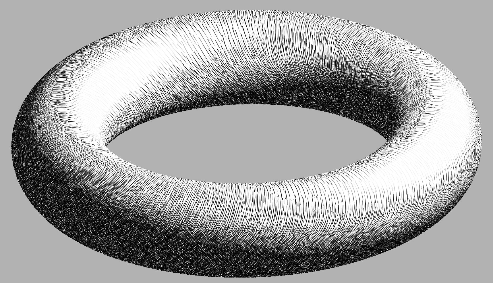
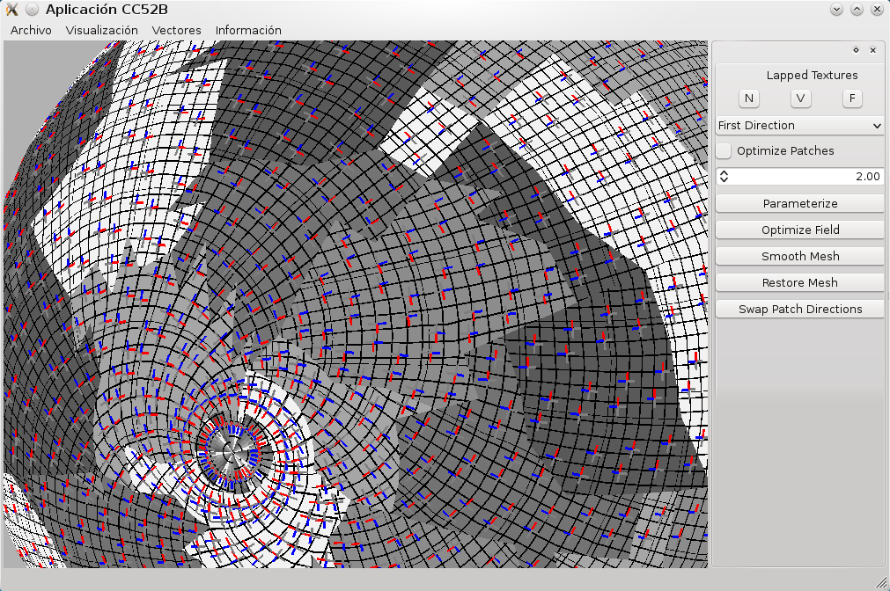

My Master's thesis was about a non photorealistic rendering technique called hatching. Hatching imitates hand-drawn lines to shade objects. In the thesis, I developed an algorithm to hatch animated objects, as previous approaches focus on static ones. The implementation is made on C++. It is based on the Real Time Hatching algorithm, which in turn uses the Lapped Textures algorithm. My advisor was María Cecilia Rivara.





Resources:
- Thesis (in spanish).
- Zahir framework at github, including the implementation of Lapped Textures.